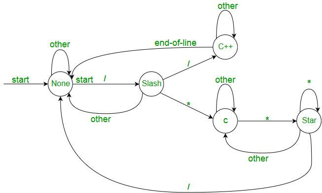
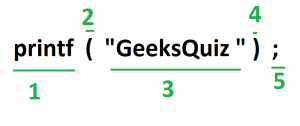

Lexical Analysis is the first phase of compiler also known as scanner. It converts the input program into a sequence of Tokens.
Lexical Analysis can be implemented with the Deterministic finite Automata.
What is a token?
A lexical token is a sequence of characters that can be treated as a unit in the grammar of the programming languages.
Example of tokens:
- Type token (id, number, real, . . . )
- Punctuation tokens (IF, void, return, . . . )
- Alphabetic tokens (keywords)
Keywords; Examples-for, while, if etc. Identifier; Examples-Variable name, function name etc. Operators; Examples '+', '++', '-' etc. Separators; Examples ',' ';' etc
Example of Non-Tokens:
- Comments, preprocessor directive, macros, blanks, tabs, newline etc
How Lexical Analyzer functions
1. Tokenization .i.e Dividing the program into valid tokens.
2. Remove white space characters.
3. Remove comments.
4. It also provides help in generating error message by providing row number and column number.
{kind=link}

The lexical analyzer identifies the error with the help of automation machine and the grammar of the given language on which it is based like C , C++.
Suppose we pass a statement through lexical analyzer –
a = b + c ; It will generate token sequence like this:
id=id+id; Where each id reference to it’s variable in the symbol table referencing all details
For example, consider the program
int main()
{
// 2 variables
int a, b;
a = 10;
return 0;
}
All the valid tokens are:
'int' 'main' '(' ')' '{' '}' 'int' 'a' ',' 'b' ';'
'a' '=' '10' ';' 'return' '0' ';' '}'
Above are the valid tokens.
You can observe that we have omitted comments.
As another example, consider below printf statement.

There are 5 valid token in this printf statement.
Exercise 1:
Count number of tokens :
{kind=link}
int main()
{
int a = 10, b = 20;
printf("sum is :%d",a+b);
return 0;
}
Answer: Total number of token: 27.
Exercise 2:
Count number of tokens :
int max(int i);
- Lexical analyzer first read int and finds it to be valid and accepts as token
- max is read by it and found to be valid function name after reading (
- int is also a token , then again i as another token and finally ;
Answer: Total number of tokens 7: int, max, ( ,int, i, ), ;
Below are previous year GATE question on Lexical analysis.
http://quiz.geeksforgeeks.org/lexical-analysis/